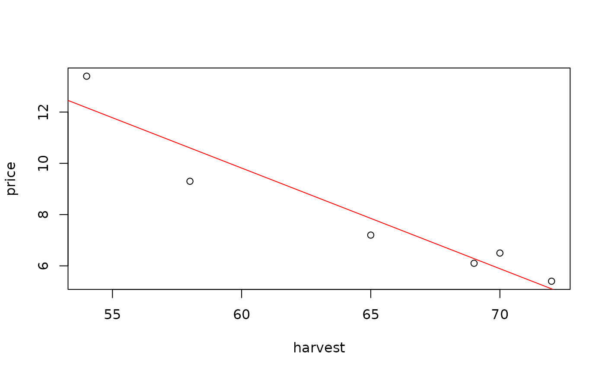

Data for Exercise 9.61
Orange
A data frame/tibble with six observations on two variables
harvest in millions of boxes
average price charged by California growers for a 75-pound box of navel oranges
Kitchens, L. J. (2003) Basic Statistics and Data Analysis. Pacific Grove, CA: Brooks/Cole, a division of Thomson Learning.
plot(price ~ harvest, data = Orange)model <- lm(price ~ harvest, data = Orange) abline(model, col = "red")summary(model)#> #> Call: #> lm(formula = price ~ harvest, data = Orange) #> #> Residuals: #> 1 2 3 4 5 6 #> 0.2963 -0.1817 -1.3012 0.6109 -0.6524 1.2281 #> #> Coefficients: #> Estimate Std. Error t value Pr(>|t|) #> (Intercept) 33.37622 4.09694 8.147 0.00124 ** #> harvest -0.39267 0.06303 -6.230 0.00338 ** #> --- #> Signif. codes: 0 ‘***’ 0.001 ‘**’ 0.01 ‘*’ 0.05 ‘.’ 0.1 ‘ ’ 1 #> #> Residual standard error: 1.015 on 4 degrees of freedom #> Multiple R-squared: 0.9066, Adjusted R-squared: 0.8832 #> F-statistic: 38.81 on 1 and 4 DF, p-value: 0.003381 #>rm(model)